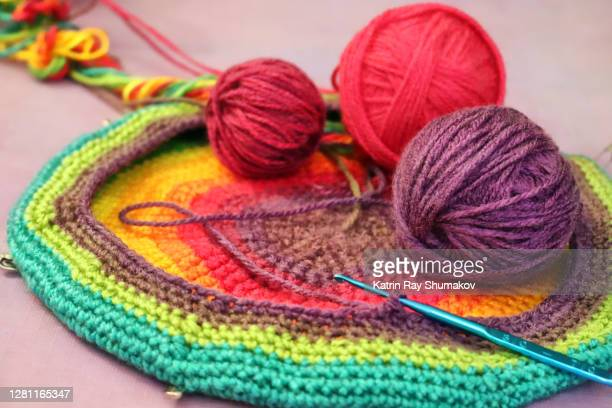

El término proviene del germánico croc y del francés antiguo crochet, que significan “gancho”. Es una técnica de tejido a mano en la que se usa un ganchillo o gancho para formar cadenas con hilos. Se pueden usar hilos muy finos con ganchos muy delicados, hasta estambre grueso con ganchos igualmente gruesos.
